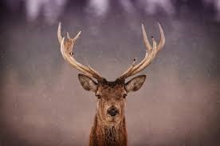

Zvěř

Zvěř je populace volně (divoce) žijících zvířat, která má nebo měla význam z hlediska myslivosti. V českém právu stanoví § 2 zákona o myslivosti (449/2001 Sb.) taxativní výčet taxonomických druhů, jejichž volně žijící populace se za zvěř považují. Zvěř se dále rozděluje na srstnatou (zákon o myslivosti ji nazývá přímo savci) a pernatou (zákon o myslivosti ji nazývá ptáci). Tyto dvě skupiny se dále člení podle užitkovosti.
Druhy zvěře, kterou nelze lovit nebo které jsou zvláště chráněné:
savci
- bobr evropský (Castor fiber)
- kočka divoká (Felis silvestris)
- los evropský (Alces alces)
- medvěd hnědý (Ursus arctos)
- rys ostrovid (Lynx lynx)
- vlk euroasijský (Canis lupus)
- vydra říční (Lutra lutra)
ptáci
- čírka modrá (Anas querquedula)
- čírka obecná (Anas crecca)
- havran polní (Corvus frugilegus)
- holub doupňák (Columba oenas)
- jeřábek lesní (Bonasa bonasia)
- jestřáb lesní (Accipiter gentilis)
- káně lesní (Buteo buteo)
- káně rousná (Buteo lagopus)
- kopřivka obecná (Anas strepera)
- kormorán velký (Phalacrocorax carbo)
- koroptev polní (Perdix perdix)
- krahujec obecný (Accipiter nisus)
- krkavec velký (Corvus corax)
- křepelka polní (Coturnix coturnix)
- lžičák pestrý (Anas clypeata)
- moták pochop (Circus aeruginosus)
- poštolka obecná (Falco tinnunculus)
- racek chechtavý (Larus ridibundus)
- raroh velký (Falco cherrug)
- sluka lesní (Scolopax rusticola)
- sojka obecná (Garrulus glandarius)
- sokol stěhovavý (Falco peregrinus)
- tetřev hlušec (Tetrao urogallus)
- tetřívek obecný (Lyrurus tetrix)
- volavka popelavá (Ardea cinerea)
- výr velký (Bubo bubo)
Druhy zvěře, kterou lze obhospodařovat lovem:
savci
- daněk skvrnitý (Dama dama)
- jelen evropský (Cervus elaphus)
- jelenec běloocasý (Odocoileus virginianus)
- jezevec lesní (Meles meles)
- kamzík horský (Rupicapra rupicapra)
- koza bezoárová (Capra aegagrus)
- králík divoký (Oryctalogus cuniculus)
- kuna lesní (Martes martes)
- kuna skalní (Martes foina)
- liška obecná (Vulpes vulpes)
- muflon (Ovis musimon)
- ondatra pižmová (Ondatra zibethica)
- prase divoké (Sus scrofa)
- sika Dybowského (Cervus nippon dybowskii)
- sika japonský (Cervus nippon nippon)
- srnec obecný (Capreolus capreolus)
- tchoř tmavý (Mustela putorius)
- zajíc polní (Lepus europaeus)
ptáci
- bažant královský (Syrmaticus reevesii)
- bažant obecný (Phasianus colchicus)
- hrdlička zahradní (Streptopelia decaocto)
- holub hřivnáč (Columba palumbus)
- husa běločelá (Anser albifrons)
- husa polní (Anser fabalis)
- husa velká (Anser anser)
- kachna divoká (Anas platyrhynchos)
- krocan divoký (Meleagris gallopavo)
- lyska černá (Fulica atra)
- perlička obecná (Numida meleagris)
- polák chocholačka (Aythya fuligula
- polák velký (Aythya ferina)
- straka obecná (Pica pica)
- vrána obecná (Corvus corone)
Historický vývoj pohledu na zvěř
V paleolitu byla zvěř lovena jako hlavní zdroj obživy vedle sběru rostlin. V Evropě byli vyhledávanou kořistí lovců, mamuti, zubři, losi, sobi, jeleni, bobři apod. Postupem času se zvěř stává majetkem panovníka respektive šlechty, jejíž vlastnictví bylo spojeno s právem na půdu. Od této doby je zvěř lovena spíše kvůli sportu. Lov zvěře se stal oblíbenou kratochvílí šlechty. Tento stav se stupňoval až do takové míry, že bylo třeba přijmout řadu regulačních opatření, která mají za úkol chránit početní stavy zvěře před nekontrolovaným vybíjením. Nyní již není hlavním problémem zvěře lov, ale moderní zemědělství a znečišťování životního prostředí.
Faremní chovy
Existují chovy zvířat, které patří do výčtu zvířat zařazovaných do výčtu zvěře. Takto chovaná zvířata ale není možno zařadit mezi zvěř. Se zvířaty, která jsou chována s tímto způsobem se musí nakládat jako s kterýmikoliv jinými hospodářskými zvířaty. Vzhledem k tomu, že nejsou zcela domestikovaná, z toho však vyplává celá řada praktických i legislativních úskalí, hlavně pokud jde o porážku a zpracování produktů.V poslední době vyvstaly problémy s odstřelem zvířat z faremních chovů, což je v rozporu se Zákonem o myslivosti i se Zákonem na ochranu zvířat, neboť jelenovití z farem by měli být poráženi na jatkách jako jiný dobytek. Přeprava jelenovitých a manipulace s nimi však často způsobuje takové obtíže, že se od toho z praktických důvodů upouští. Tato zvířata jsou zdrojem masa, avšak kvůli zařazení mezi hospodářská zvířata nemůže být jejich trofej ohodnocena ani vystavována na mysliveckých výstavách.
Myslivost Les